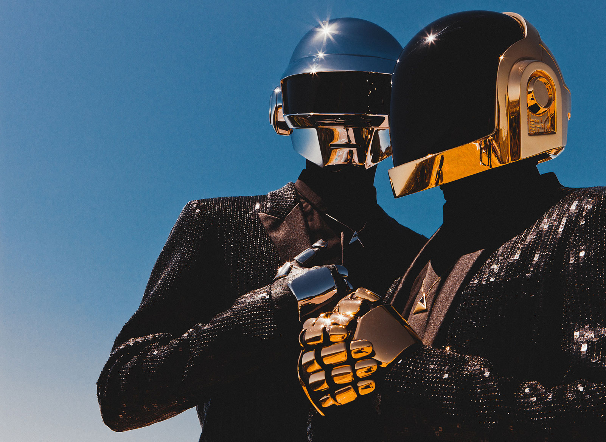
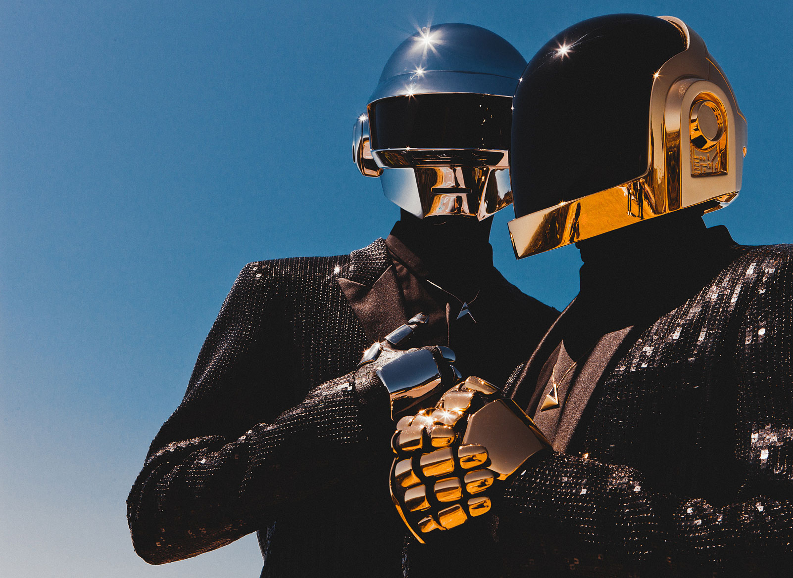

I wanted to share a few images that I am quite fond of and believed offer a lens into my life and who I am as a person. The first being my father and me when I was a child. He and I are very close and he is the reason why I work so hard in life. The second image is of the San Antonio Spurs after their 2014 Championship victory. I love basketball and I am originally from San Antonio, so this combines two things I am passionate about.
The last two images are of my alma mater Central Catholic High School, and one of my favorite bands, Daft Punk.


 
